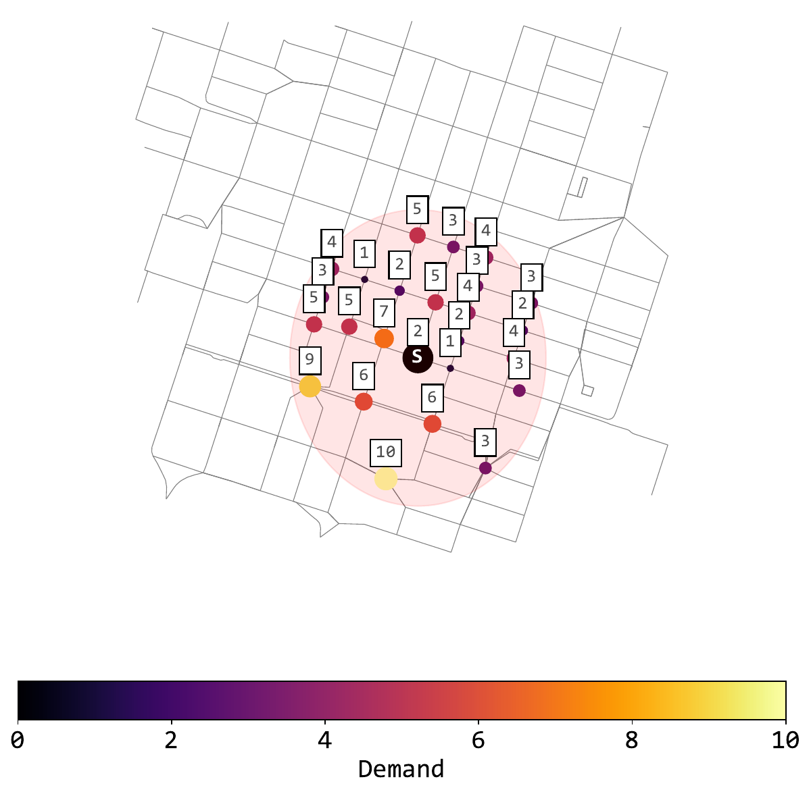
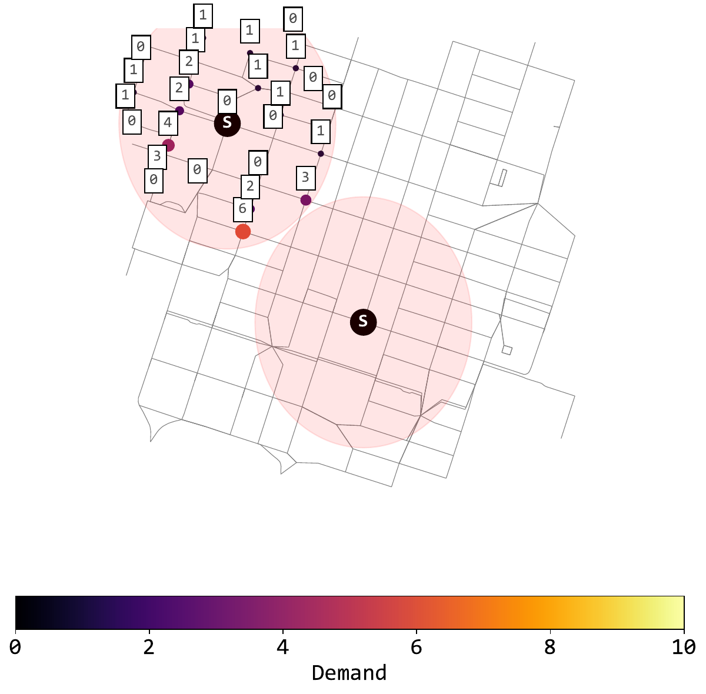
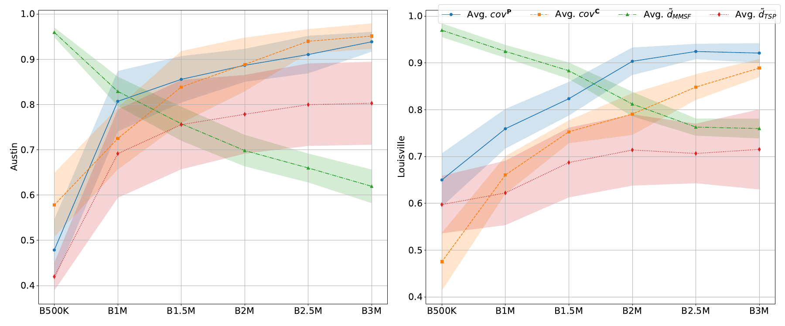
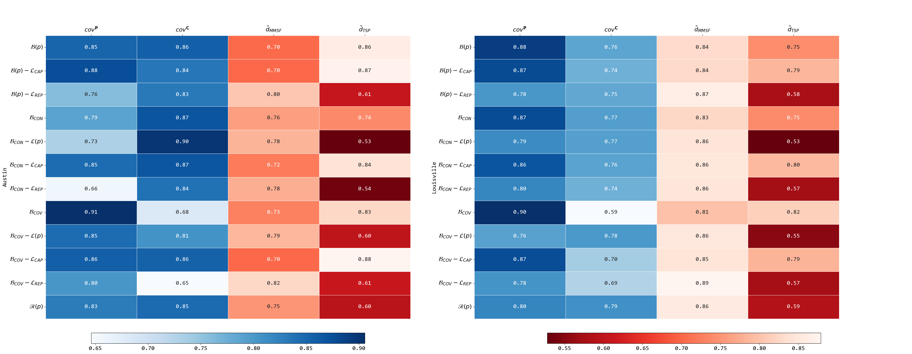

Model the city
Combine road-network structure with observed parking and charging demand.
Transportation Research Part E · Volume 194 · 2025
A deep reinforcement-learning framework places parking, charging and battery-swapping facilities on real urban road networks while balancing demand coverage, convenience, budget and operational effort.
The infrastructure problem
Geo-fenced facilities can organize parking, support charging and simplify battery operations, but every location changes accessibility, coverage and repositioning effort. The framework represents these competing objectives in a configurable utility model and learns placement strategies on real road networks.
Planning framework
Combine road-network structure with observed parking and charging demand.
Configure benefits and losses for coverage, convenience, capacity and repositioning.
Let the reinforcement-learning agent create, extend or relocate facilities.
Evaluate budget scenarios and identify where additional investment reaches diminishing returns.


Real-world evaluation
Austin combines dense central demand with widely distributed outer areas, while Louisville exhibits a more concentrated pattern. Switching cities reveals why infrastructure strategies must adapt to local geography rather than reuse a single placement recipe.
Budget scenarios
Across budgets from B500K to B3M, parking and charging coverage generally improve while average distances and operational effort expose different trade-offs. The pattern differs between Austin and Louisville, reinforcing the need for locally configurable objectives.

Local priorities
Coverage-focused strategies favor service reach, while capacity, convenience and repositioning terms change which facility portfolio is preferred. The configurable objective lets planners make those priorities explicit rather than burying them inside the optimizer.

Resources
Citation
Julian Teusch, Bruno Neumann Saavedra, Yannick Oskar Scherr, and Jörg P. Müller. Strategic planning of geo-fenced micro-mobility facilities using reinforcement learning. Transportation Research Part E: Logistics and Transportation Review, 194, 103872, 2025. DOI: 10.1016/j.tre.2024.103872.